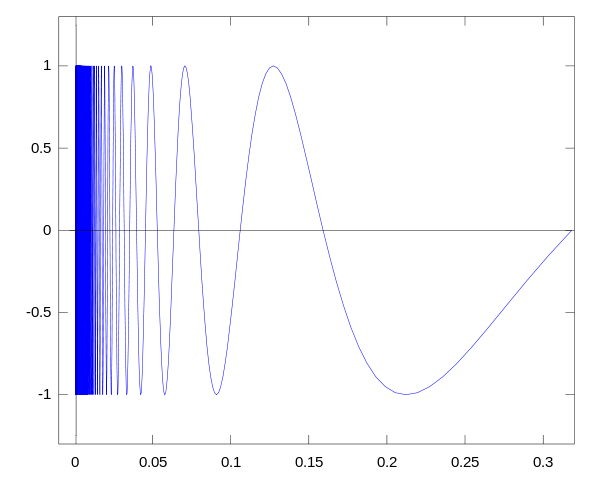
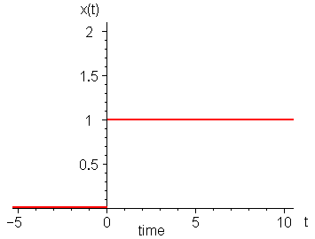
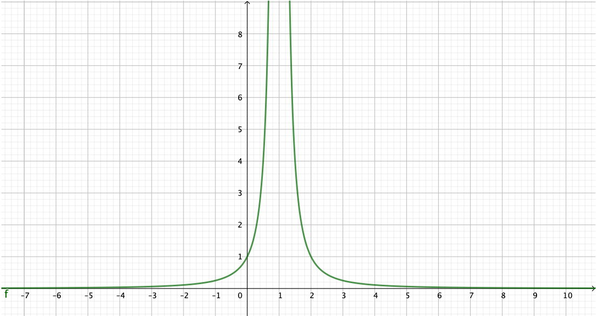
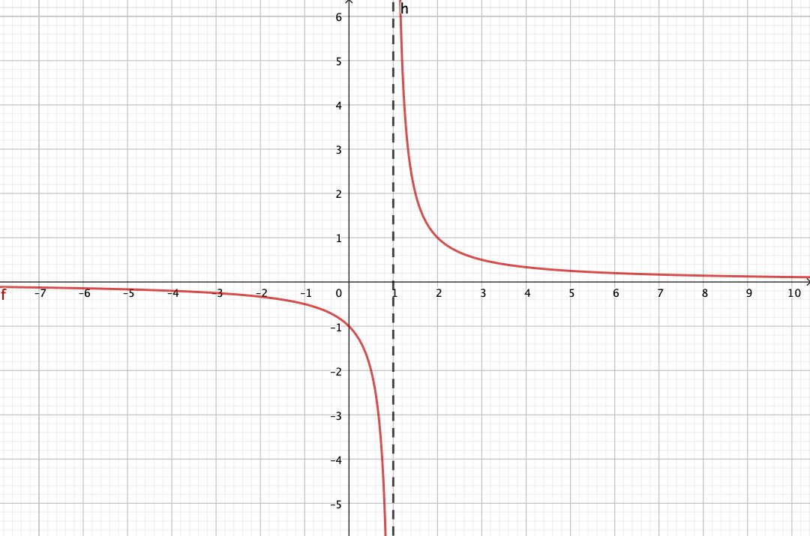

Capítulo 6 Funciones: definición y límites
El concepto de función es central a las matemáticas como las entendemos hoy, y en particular al cálculo. Sin el concepto de función no existen el de derivada ni el de integral. Aunque lo que nos interesa al final es saber derivar e integrar, para llegar hasta allí debemos pasar por los conceptos de límite y de continuidad. El concepto de límite no es diferente al del límite de sucesiones, aunque aplicado a otro contexto y con características nuevas. El de continuidad es muy intuitivo, pero permite establecer teoremas potentes y necesarios.
6.1 Definición de función
Informalmente, podemos definir función como una regla que asigna a cada uno de ciertos números reales un número real. Veamos algunos ejemplos
- Se asigna al número 2 el número 3 y al número 3 el número 2.
- Se asigna a todo número par el número \(\pi\) y a todo número impar el número \(e\)
- Se asigna a todo número real \(x\) el número \(3x^2 + 2\)
- Se asigna a cada peso \(P\) de un producto su precio \(C = 1,95 P\)
- Se asigna a cada número \(y\) su valor absoluto, es decir \[ \left\{\begin{array}{rl} y & \mbox{si } y ≥ 0\\ -y & \mbox{si } y < 0 \end{array}\right.\]
- Se asigna a cada número real \(t\) el número \(\frac{t}{t-1}\)
Vemos que estas reglas pueden ser específicas para cada número o generales a un conjunto de números o a todos los números. Al conjunto de números para los que está definida la regla se llama el dominio de la función. A menudo los dominios no se especifican, sino que son implícitos. En nuestros ejemplos, los dominios son
- los números 2 y 3
- los números enteros exceptuando el 0 (el 0 no es par ni impar)
- todos los números reales
- todos los números reales positivos (no hay pesos negativos)
- todos los números reales
- todos los números reales menos el 1.
Hemos visto también que podemos dividir cada regla en subreglas: las reglas (1), (2) y (5) están divididas en dos subreglas. En este caso decimos que la función está definida a trozos. Un ejemplo un poco más complejo de función definida a trozos es:
Se asigna a todo número \(x\) \[\left\{\begin{array}{cl} 0 & \mbox{ si } y < 0\\ y & \mbox{ si } 0 ≤ y < 2\\ -\frac{y}{2} + 3 & \mbox{ si } 2 ≤ y < 6\\ 0 & \mbox{ si } y ≥ 6 \end{array}\right.\]
Su gráfica es:

Hay dos cosas importantes a notar en esta definición. La primera es que la regla asigna el valor 0 a los valores de \(y\) que son menores que 0 o mayores que 6. Esto no es lo mismo que asignar valores sólo entre 0 y 6. En nuestra función el valor asignado a \(-1\) es 0, mientras que en este segundo caso, no se asignaría nungún valor a \(y = -1\).
La segunda es que hemos ido con mucho cuidado en no asignar dos valores a ningún valor del dominio: hemos asignado 0 a los valores \(y < 0\) e \(y\) a los valores \(y ≥ 0\). Porque una de las características fundamentales de un función es que sólo se asigna un único valor a cada valor del dominio.
Por ejemplo, una descripción de una curva que no es una función es la del círculo: \(x^2 + y^2 = r^2\), donde \(r\) es el radio. Hay dos valores de \(y\) posibles para cada valor de \(x\). Por ejemplo, para \(x = 0\), \(y\) puede valer \(r\) y \(-r\).
Ahora que tenemos una idea intuitiva de qué es una función, vamos a dar una definición formal de función y de dominio.
De estas definiciones extraemos la notación habitual. Dado un elemento \(x\) del dominio, el valor asignado a este \(x\), normalmente llamado el valor de \(f\) en \(x\) se designa por \(f(x)\).
6.2 Operaciones con funciones
Los valores de \(f\) son números, y por lo tanto pueden ser operados. Esto nos permite definir de forma natural operaciones aritméticas entre funciones siguiendo los conceptos de operaciones entre números.
Definición 6.3 Sean \(f\) y \(g\) dos funciones. Definimos las siguientes operaciones entre funciones:
- \((f + g)(x) = f(x) + g(x)\)
- \((f - g)(x) = f(x) - g(x)\)
- \((f \cdot g)(x) = f(x) \cdot g(x)\)
- \(\frac{f}{g}(x) = \frac{f(x)}{g(x)}\)
Estamos muy acostumbrados a ver expresiones del estilo \(\cos(x^2)\). La asignación que describe esta expresión es la siguiente: a cada valor \(x\) primero se le asigna el valor \(x^2\); y a este valor se le asigna el valor \(\cos(x)\). Si llamamos \(f(x)\) a la función \(x^2\) y \(g(x)\) a la función \(\cos(x)\), lo que hemos calculado es \(g(f(x))\). A esto se llama la composición de \(f\) con \(g\) y se simboliza con \((g \circ f)\): \[(g \circ f)(x) = g(f(x))\] Una de las particularidades de esta operación es que se lee de “dentro a afuera”: \((g \circ f)(x)\) es “\(f\) compuesto con \(g\)” y no al revés, como con las otras operaciones. Para complicar las cosas un poco más, esta operación no es conmutativa: \((g \circ f)(x) ≠ (f \circ g)(x)\). No es lo mismo \(\cos(x^2)\) que \(\cos^2(x)\). Hemos de ir con mucho cuidado al escribir y leer composiciones.
6.3 Límites de funciones
La idea básica de límite de una función no es diferente de la de límite de una sucesión que vimos en el apartado 3.6. Para sucesiones, el límite es el valor al que se acerca la sucesión cuando \(n \to \infty\), para funciones es el valor al que se acerca la función cuando \(x \to a\). La diferencia es que en una sucesión sólo tiene sentido hablar de límite en el “extremo” de la sucesión, mientras que para una función tiene sentido hablar de límite en cualquier punto del dominio. Esto da lugar a algunos cambios en la definición y a problemas nuevos.
Recordemos la definición formal de límite de una sucesión que vimos en el apartado 3.6.1:
Sea una sucesión \(\{a_n\}\). Decimos que esta sucesión tiene límite \(L\) cuando \(n\) tiende a infinito, y lo escribimos como \[\lim_{n \to \infty} a_n = L\] si para cualquier número positivo \(\varepsilon\), podemos encontrar un entero positivo \(N\), dependiente de \(\varepsilon\), tal que \(|a_n – L| < \varepsilon\) para todos los enteros \(n > N\).
Veamos los cambios que tenemos que hacer:
- En vez de la sucesión \(\{a_n\}\) tenemos la función \(f(x)\)
- En vez de tender \(n\) a infinito, \(n \to \infty\), tenemos \(x\) que tiende a una valor que llamaremos \(a\): \(x \to a\)
Estos dos cambios dan lugar a que escribamos el límite como \[\lim_{x \to a} f(x) = L\] Veamos qué mas cambios hay que hacer.
- En vez de \(|a_n – L| < \varepsilon\) hemos de escribir \(|f(x) - L| < \varepsilon\)
- En vez de “podemos encontrar un positivo \(N\)” hemos de escribir … ¿?
Este es el único punto donde el cambio no es obvio. Pero la solución la tenemos en la definición misma. ¿Cómo lo hacemos para expresar que los términos de la sucesión se acercan a \(L\) tanto como queremos? Introducimos un valor que llamamos \(\varepsilon\) y exigimos que \(|a_n – L| < \varepsilon\). Pues hacemos lo mismo: introducimos un nuevo valor que llamaremos \(\delta\), positivo, y exigiremos que \(0 < |x - a| < \delta\). El “\(> 0\)” es necesario, para impedir la “trampa” \(\delta = 0\). Y con esto podemos escribir la definición formal de límite de una función:
Y ahora cito un libro clásico, el Cálculus de Spivak:
Veamos dos ejemplos de aplicación de esta definición. Primero uno muy sencillo:Esta definición es tan importante (todo lo que emprendamos a partir de ahora va a depender de ella) que sería vano pasar adelante sin saberla. ¡Apréndala el lector de memoria si es necesario, como si fuera un poema!
Ejemplo 6.1 Sea \(f(x) = x\). Demuestra que \(\lim_{x \to 2} f(x) = 2\).
Tenemos que \(a = 2\), \(f(x) = x\) y \(L = 2\). Si reescribimos la definición para este caso concreto tenemos que demostrar que para cualquier número positivo \(\varepsilon > 0\), podemos encontrar un valor \(\delta\) > 0, tal que para todo \(x\), si \(0 < |x - 2| < \delta\) entonces \(|x - 2| < \varepsilon\).
Evidentemente esto se cumple si \(\delta = \varepsilon\).Ahora vayamos a un caso más complicado.
Ejemplo 6.2 Sea \(f(x) = x^2\). Demuestra que \(\lim{x \to 3} f(x) = 9\).
Lo que tenemos que hacer ahora es dado el \(\varepsilon\) encontrar un \(\delta\) tal que si \(0 < |x - 3| < \delta\) entonces \(|x^2 - 9| < \varepsilon\).
Como es más complicado, cojamos un valor concreto de \(\varepsilon\), por ejemplo \(\varepsilon = 0.1\). Entonces queremos que \[|x^2 - 9| < 0.1\] Vamos a empezar por suponer que \(x > 3\), entonces \[|x^2 - 9| = x^2 - 9 < 0.1\] y obtenemos que \(x^2 < 9.1\), es decir que \(x < \sqrt{9.1}\).
Hacemos lo mismo si \(x < 3\) y tenemos que \(x > \sqrt{8.9}\).
Luego si \(\sqrt{8.9} < x < \sqrt{9.1}\) aseguramos que \(|x^2 - 9| < 0.1\). Podemos escoger cualquier \(\delta\) que nos asegure que \(\sqrt{8.9} < x < \sqrt{9.1}\). Por ejemplo, \(\delta = 0.015\) nos va bien.
Esto que hemos hecho para un \(\varepsilon\) concreto, lo podemos generalizar fácilmente. Para que \(|x^2 - 9| < 0.1\) tiene que pasar que \[\sqrt{9 - \varepsilon} < x < \sqrt{9 + \varepsilon}\] Restamos 3 a todo y tenemos que: \[\sqrt{9 - \varepsilon} - 3 < x -3 < \sqrt{9 + \varepsilon}- 3\] Y a poco que lo piensas ves que el valor de \(\delta\) debe ser menor que el más cercano a 3 de los dos valores: \[ \delta ≤ \min(|\sqrt{9 - \varepsilon} - 3| , |\sqrt{9 + \varepsilon}- 3)|\]
Luego para cualquier \(\varepsilon\) podemos encontrar un \(\delta\) tal que si \(0 < |x - 3| < \delta\) entonces \(|x^2 – 9| < \varepsilon\). Queda demostrado.6.3.1 Límites cuando \(x \to \infty\)
Hemos supuesto hasta ahora que \(x\) tiende a un valor finito \(a\). Pero también podemos tener un límite
6.3.2 Existencia de límites
Al igual que en el caso de sucesiones, el límite puede no existir. Hay tres motivos por los cuales puede no haber límite, de los que dos ya los vimos en el caso de límites de sucesiones. El primero es que la función crezca de forma ilimitada. En ese caso normalmente decimos, algo incorrectamente, que el límite es \(\infty\) o \(-\infty\). El segundo es que la función oscile y no se acerque a ningun valor concreto. Es fácil imaginar casos cuando \(x \to \infty\), pero también puede pasar cuando \(x\) tiende a un valor finito. El ejemplo típico es la función \(\sin(1/x)\) cuando \(x \to 0\). A medida que la función se acerca a 0 oscila cada vez más alocadamente:

Como dije, hay un tercer caso, que no aparecía en los límites de sucesiones, pero que explicaremos más adelante.
6.3.3 Operaciones con límites
Vimos en la sección 3.7 que si teníamos sucesiones que se podían obterner de operaciones de otras sucesiones, los límites se obtenían operando los límites. Lo mismo pasa con los límites de funciones. Es fácil demostrar que dadas dos funciones \(f(x)\) y \(g(x)\), y siendo \[\lim_{x \to a} f(x) = A \quad \mbox{ y } \quad \lim_{x \to a} g(x) = B\] entonces: \[\begin{align} \lim_{x \to a} (f + g)(x) &= \lim_{x \to a} (f)(x) + \lim_{x \to a} (g)(x) = A + B\\ \lim_{x \to a} (f - g)(x) &= \lim_{x \to a} (f)(x) - \lim_{x \to a} (g)(x) = A - B\\ \lim_{x \to a} (f \cdot g)(x) &= \lim_{x \to a} (f)(x) \cdot \lim_{x \to a} (g)(x) = A \cdot B\\ \lim_{x \to a} \frac{f}{g}(x) &= \frac{\lim_{x \to a} (f)(x)}{\lim_{x \to a} (g)(x)} = \frac{A}{B}\\ \lim_{x \to a} (f^g)(x) &= \lim_{x \to a} (f)(x) ^{\lim_{x \to a} (g)(x)} = A^B \end{align}\] Al igual que pasaba en el caso de las sucesiones, en el caso de la división y potenciación podíamos no tener límites si el límite resulta ser infinito, y también podemos tener una indeterminación.
6.4 Cálculo de límites
En la inmensa mayoría de los casos el cálculo del límite de un función es trivial, tan trivial que ni lo consideramos el cálculo de un límite. Por ejemplo,
- \(\lim_{x \to 2} x + 2 = 4\)
- \(\lim_{x \to 0} \frac{x^2 + 5}{2x -1} = -5\)
- \(\lim_{x \to \pi/2} cos (x) = 1\)
- \(\lim_{x \to 1} \frac{x}{(x-1)^2} = \infty\)
Los únicos casos en donde es necesario esforzarse, en los únicos casos en los que le dedicamos tiempo y atención, es cuando tenemos una indeterminación.
Ya vimos las indeterminaciones en el apartado 3.9. Recordamos que hay 7:
\[\infty - \infty \qquad \frac{\infty}{\infty} \qquad 1^\infty \qquad 0\cdot \infty \qquad \infty^0 \qquad \frac{0}{0} \qquad 0^0\]
Todo lo que se vio de cálculo de límites entonces, es aplicable ahora, en particular la jerarquía de infinitos que se explicaron en el apartado 3.10.2. Veamos cómo se aplica al caso de funciones con agunos ejemplos.
Ejemplo 6.3 ¿Cuál es el límite de \(\frac{x^3 + 3}{e^{x/1000}}\) cuando \(x\) tiende a infinito?
Tenemos aquí una indeterinación del tipo \(\frac{\infty}{\infty}\). La exponencial es un infinito de orden superior, luego
\[\lim_{x \to \infty} \frac{x^3 + 3}{e^{x/1000}} = \lim_{x \to \infty} \frac{1}{e^{x/1000}} = 0\]Ejemplo 6.4 ¿Cuál es el límite de \(f(x) = \frac{1}{x} - \frac{1}{x^2}\) cuando \(x\) tiende a 0?
Tenemos aquí una indeterminación del tipo \(\infty - \infty\). El término \(\frac{1}{x^2}\) es un infinito de orden superior, luego
\[\lim_{x \to 0} \frac{1}{x} - \frac{1}{x^2} = \lim_{x \to 0} - \frac{1}{x^2} = -\infty\]En el caso de la indeterminación del tipo \(1^\infty\) vimos que dada cualquier sucesión \(\{a_n\}\) tal que \(\lim_{n \to \infty} a_n = \pm\infty\), la sucesión \(\{c_n = (1 + \frac{1}{a_n})^{a_n}\}\) tiene por límite el número \(e\). Esto lo podemos generalizar al caso de funciones.
Dada una función \(f(x)\) tal que \(\lim_{x \to a} f(x) = \pm\infty\), entonces \[\lim_{x \to a} \left(1 + \frac{1}{f(x)}\right)^{f(x)} = e\]
Usemos este resultado.Ejemplo 6.5 ¿Cuál es el límite cuando de \((1 + 2x)^{(1/x)}\) cuando \(x\) tiende a 0?
Esta expresión la podemos escribir como \[\left(1 + \frac{1}{1/2x}\right)^{1/x}\] Y esta expresión es fácil transformarla a la forma que queremos: \[\left(1 + \frac{1}{1/2x}\right)^{(1/2x) \cdot 2}\] Aplicamos el límite: \[\lim_{x \to 0}\left(\left(1 + \frac{1}{1/2x}\right)^{1/2x}\right)^2 = \left(\lim_{x \to 0}\left(1 + \frac{1}{1/2x}\right)^{1/2x}\right)^2 = e^2\]Veamos ahora cómo resolver otros tipos de indeter ¡minaciones
6.4.1 Indeterminación \(\frac{0}{0}\)
Si tenemos un indeterminación de tipo \(\frac{0}{0}\) y \(f(x)\) y \(g(x)\) son ambos polinomios, podemos descomponer los polinomios en factores y simplificar.
Ejemplo 6.6 Calcula \[\lim_{x\to 0}\frac{x^3 - 8}{x-2}\]
Descomponemos \(x^3 - 8\). Sabemos que \(x=2\) es una raíz (si no, no tendríamos la indeterminación), luego \[x^3 - 8 = (x-2)(ax^2 + bx + c)\] Desarrollamos el lado izquierdo e igualamos los componentes de cada potencia y tenemos que \(a = 1\), \(b = 2\) y \(c = 4\). Luego nos queda \[\lim_{x\to 0}\frac{x^3 - 8}{x-2} = \lim_{x\to 0}\frac{(x-2)(x^2 + 2x + 4)}{x-2} = \lim_{x\to 0} x^2 + 2x + 4 = 0\]Si no son polinomios, podemos usar la regla de L’Hôpital.
6.4.2 Regla de l’Hôpital
La regla de L’Hôpital recibe su nombre de Guillaume Françoise Antoine, Marqués de L’Hôpital. La regla la descubrió y demostró Johann Bernoulli, pero el marqués le pagó para que le pusiera su nombre. Poderoso coballero es Don Dinero…
Esta regla es muy útil para resolver indeterminaciones del tipo \(\frac{0}{0}\).
Veamos cómo esta regla nos resuelve el límite calculado anteriormente, sin necesidad de descomponer el polinomio.
Ejemplo 6.7 Calcula \[\lim_{x\to 0}\frac{x^3 - 8}{x-2}\]
Aplicamos la regla de L’Hôpital, derivando numerador y denominador:
\[\lim_{x\to 0}\frac{x^3 - 8}{x-2} = \lim_{x\to 0} \frac{3x^2}{1} = 0\]Y también nos sirve si no tenemos polinomios:
Ejemplo 6.8 Calcula \[\lim_{x \to 1} \frac{\sin \pi x}{x^2 - 1}\]
Es una indeterminación del tipo \(\frac{0}{0}\). Aplicamos la regla de L’Hôpital: \[\lim_{x \to 1} \frac{\pi \cos \pi x}{2x} = \frac{\pi\cdot (-1)}{2} = -\frac{\pi}{2} \]6.4.3 Otras indeterminaciones
Un camino, si no podemos calcular una indeterminación directamente, es convertirla en una de otro tipo y seguir probando. Por ejemplo, si tenemos una función \(f(x)\) cuyo límite cuando \(x\) tiende a \(a\) es 0 y una función \(g(x)\) cuyo límite cuando \(x\) tiende a \(a\) es \(\infty\), la función \(f(x)\cdot g(x)\) presenta una indeterminación cuando \(x\) tiende a \(a\) el tipo \(0\cdot \infty\). Si no la sabemos resolver, podemos arreglar la función: \[ f(x)\cdot g(x) = \frac{f(x)}{1/g(x)}\] cambiando la indeterminación por una del tipo \(\frac{0}{0}\) y ahora podemos usar la regla de L’Hôpital.
Otra manera de transformar tipos de indeterminación es aplicar logaritmos y recordar que \(\log x^y = y\log x\). Veamos un ejemplo.
Ejemplo 6.9 Calcula \(\lim_{x \to \infty} (1/x)^{(1/x)}\).
Esta es una indeterminación del tipo \(0^0\). Vamos a transformarla aplicando logaritmos. Supongamos que \[ L = \lim_{x \to \infty} (1/x)^{(1/x)}\] aplicando logaritmos a ambos lados tenemos que \[ \log L = \lim_{x \to \infty}(\log ((1/x)^{(1/x)}) = \lim_{x \to \infty} (1/x) \log (1/x) = \lim_{x \to \infty} \frac{\log(1/x)}{x} = \lim_{x \to \infty} \frac{\log(1) - \log x}{x} = \lim_{x \to \infty} \frac{- \log x}{x}\] Esto es ahora una indeterminación del tipo \(\frac{\infty}{\infty}\). Como el denominador tiene un infinito de orden superior, entonces el límite es 0. Y nos queda \(\log L = 0\) lo que significa que \(L = 1\).6.5 Límites laterales
En los límites de secuencias, en los que \(n\) tiende a infinito, uno sólo podía acercarse al infinito desde valores inferiores, \(n < \infty\). Pero en los límites de funciones, en los que \(x\) tiende a \(a\), uno puede acercarse a \(a\) desde valores inferiores a \(a\) y desde valores superiores. Hasta ahora, en los ejemplos que hemos visto, esto no ha sido un problema, pero hay veces que lo es. Supongamos que encendemos un aparato electrónico en un instante \(t = 0\). A partir de entonces tenemos una tensión de 1 voltio. Es decir, la función es: \[ V(t) = \left\{\begin{array}{rl} 0 & \mbox{si } t < 0\\ 1 & \mbox{si } t ≥ 0\end{array}\right.\]

Si nos acercamos a \(t = 0\) desde valores negativos, desde la izquierda, la función tiende a 0, y si no miramos lo que pasa para tiempos positivos, parece que el límite es 0. Pero si nos acercamos a \(t = 0\) desde valores positivos, desde la derecha, la función tiende a 1, y si no miramos lo que pasa para tiempos positivos, parece que el límite es 1. Separece un pco a la idea de valores oscilantes y nuestra intuición nos dice, correctamente, que esta función notiene límite cuando \(t\) tiende a 0. Este es el tercer caso de inexistencia de límites que mencionábamos en el apartado 6.3.2.
Pero este concepto de límites laterales es útil y necesaria, y por lo tanto vamos a definirlas con precisión.
Como vemos, es cas la misma definición del límite comun, sólo que quitamos el valor absoluto a \(x-a\) para describir que estamos sólo considerando valores menores que \(a\) si es por la izquierda, o valores mayores que \(a\) si es por la derecha.
Estos límites laterales pueden no existir por ir hacia infinito u oscilar. Pero si ambos existen y tienden al mismo valor \(L\), este valor tiene que ser el del límite “normal. Esto lo enunciamos con el siguietne teorema.
Este concepto de límitees laterales nos permite distinguir dos casos, que si no vamos con cuidado, podemos confundir.
Consideremos priemro la función \(f(x) = \frac{1}{(x-1)^2}\). Cuando \(x\) tiende a 1 esta función crece ilimitadamente y podemos decir, aunque sea un poco incorrectamente, que \(\lim_{x \to 1} f(x) = \infty\).

Consideremos ahora la función \(f(x) = \frac{1}{x-1}\), Cuando \(x\) tiende a 1, esta función crece ilimitadamente en magnitud, pero si \(x < 1\) los numeros son negativos, mientras que si \(x > 1\) los números son positivos. Con nuestro nuevo concepto de límites laterales, podemos decir que el límite por la izquierda es \(-\infty\) y el límite por la derecha es \(+\infty\). Pero si decimos que el límite de esta función es infinito ya no estamos cometiendo una pequeña incorrección, sino un error garrafal. Esta función no tiene límite cuando \(x\) tiende a 1.

Vemos en la gráfica que la función se acerca por ambos lados a la recta vertical \(x = 1\). Y también se acerca a la recta horizontal \(y = 0\), otra vez. Las rectas a las que la gráfica de un función se aproxima continuamente, de manera que la distancia tiende hacia cero a medida que se extienden reciben el nombre de asíntotas. La recta \(x = 1\) es una asíntota vertical de esta función y la recta \(y = 0\) es una asíntota horizontal.